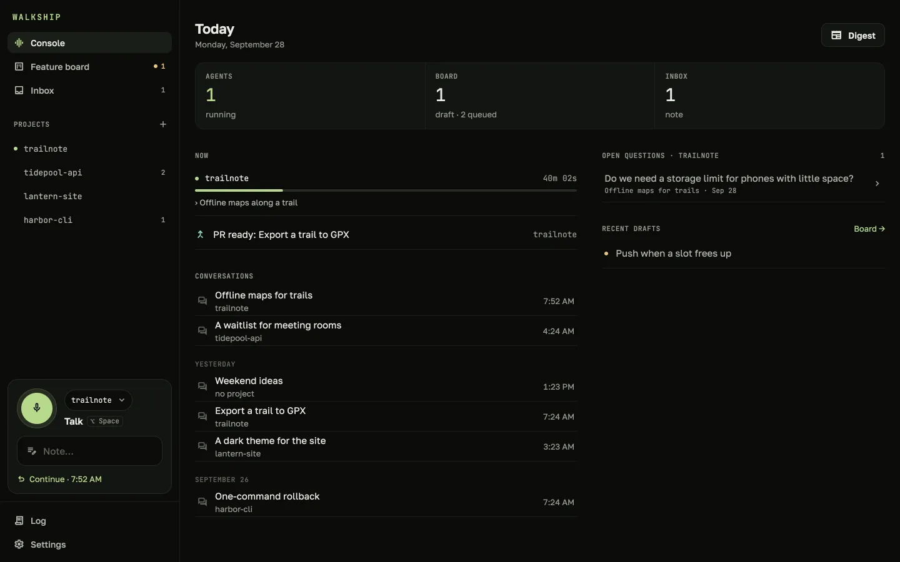
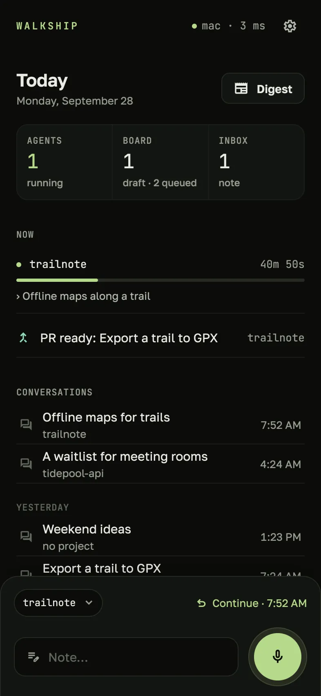
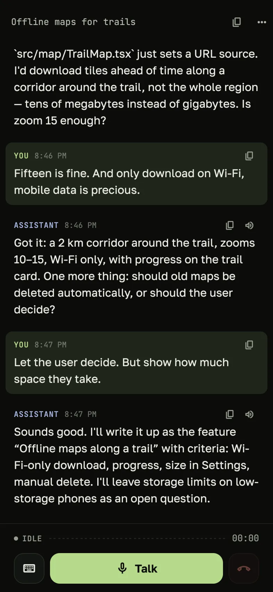
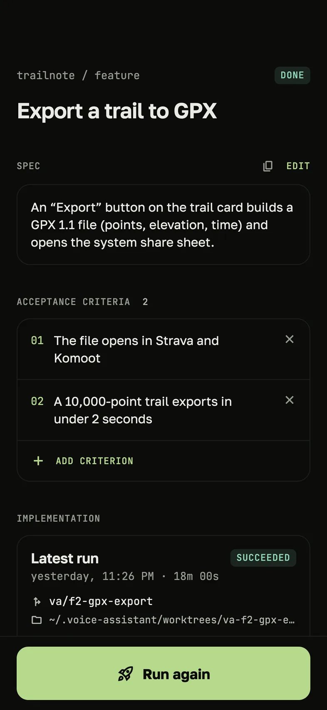
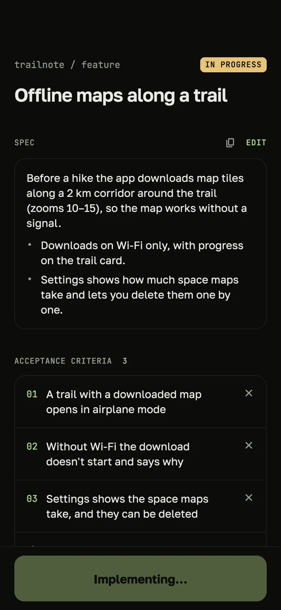
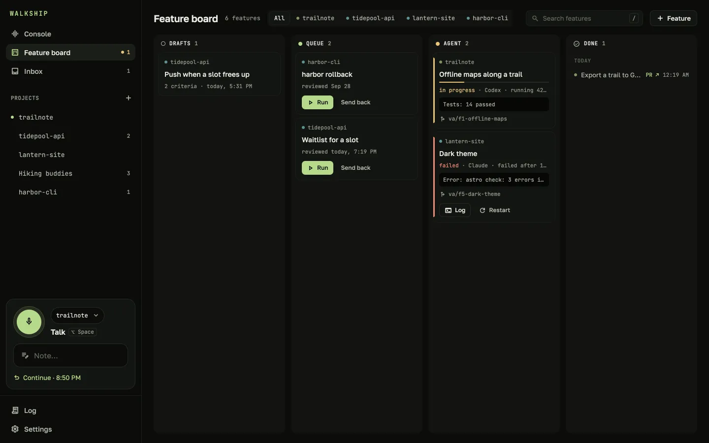
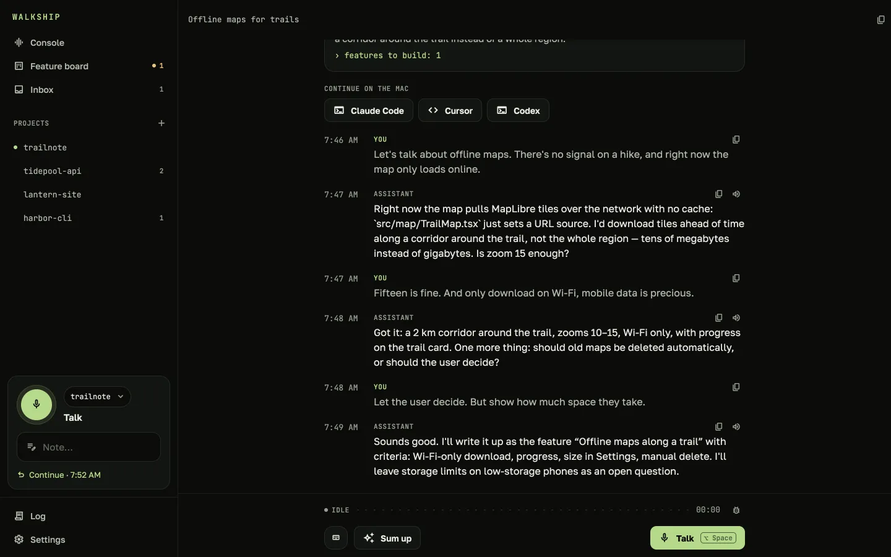

Quick notes
Drop a thought without a conversation. The assistant files it under the right project, and asks when it isn’t sure.
A voice partner for your projects
Talk a feature through while you walk. Walkship turns the conversation into a spec, and your coding agent — Claude Code or Codex — builds it on your Mac.
Beta · Apple Silicon Mac, macOS 14+ · requires Claude Code, Codex optional
The English interface shown here arrives in 1.6 — today’s build speaks Russian.


How it works

Hands-free: speak, pause, and the assistant answers out loud, then listens again. It knows the project — reads the code, the git history and your notes, and remembers past discussions.

Say “wrap it up”, and the conversation becomes decisions, open questions and features with a spec and acceptance criteria.

One tap, and Claude Code or Codex builds the feature in its own git worktree, runs the checks and commits. A push on your phone, a spoken recap, “open it” — and the PR is up.

Features
Drop a thought without a conversation. The assistant files it under the right project, and asks when it isn’t sure.
Every feature of every project: drafts, queued, agent at work, done. Start or restart right from the card.
“What did we decide about settings?” — the assistant finds it in past discussions of any project.
One button, and you hear what agents finished, where they failed, which PRs wait and what’s still open.
“Show me what the screen would look like” — a sketch right in the conversation and in the spec.
Open a spec or a transcript in Claude Code, Cursor or Codex with one click.
Claude Code, Cursor and Codex in the repo can see the project’s ideas, decisions and features.
Connect Jira, Sentry or a database, and the assistant uses them in conversation.
A phrase you said waits on the phone and goes out once the server is back.
Privacy

Requirements
The Mac app sets everything up on first launch: Claude Code sign-in, the voice pack and a QR code for the phone.
gh (GitHub CLI) for pull requestsFAQ
No. The conversation and summaries run through Claude Code on your Claude subscription, and the code is written by Claude Code or Codex on yours.
For writing the code, yes: pick Claude Code or Codex in Settings → Agents & models. The voice conversation itself runs on Claude Code for now.
Only to the agents you use — Claude Code, and Codex if you pick it — exactly as if you ran them yourself. Walkship has no cloud server.
Not yet. There’s the Mac app and Android. On the Mac you can talk right in the app.
It works in a separate git worktree on its own branch. Your main branch stays as it was, and a PR opens only when you say so.
English and Russian. One setting switches the screens, the assistant and the voice, on the Mac and the phone alike. English arrives in 1.6.
The app checks for new versions and offers them from the menu bar. Your data stays in place.